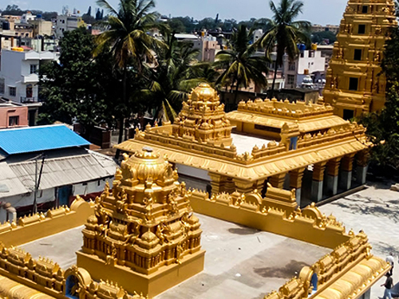
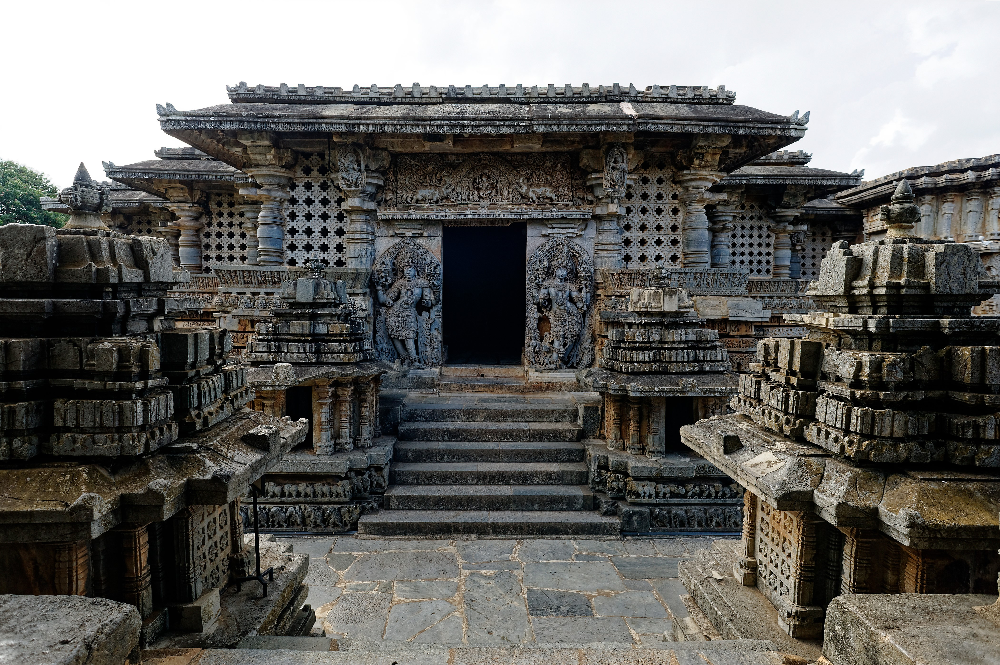
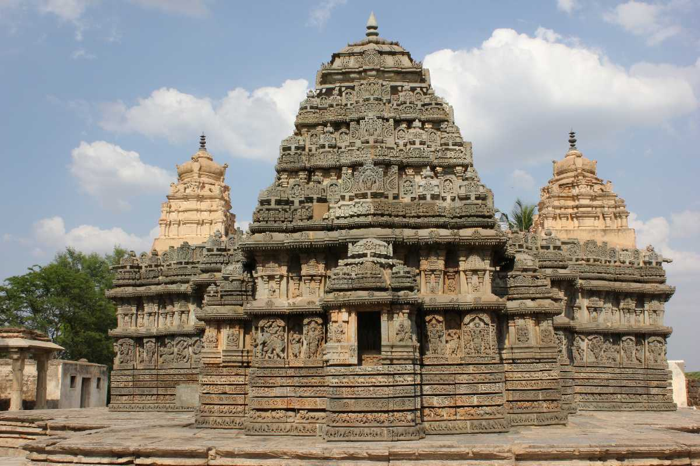
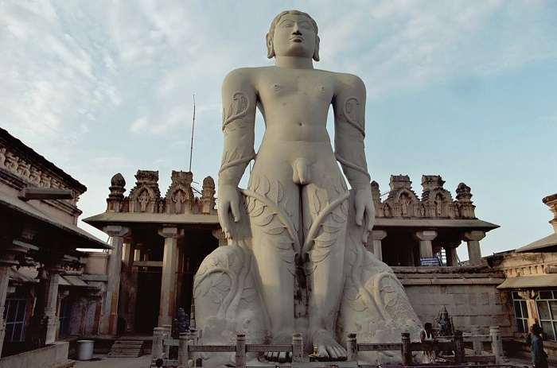
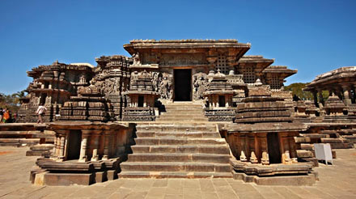

TourKarnataka.com
TOURIST PLACES IN HASSAN
HASSANAMBHA TEMPLE

Hasanamba temple is a Hindu temple located in Hassan, Karnataka, dedicated to the Goddess Shakti or Amba. The temple was built in the 12th century and tourists are only allowed to visit the temple once a year during the Hindu festival Deepavali in October.
Devotees visit the temple to seek blessings of the Goddess during this week.
Archeological experts consider the Hasanamba Temple to be an example of the epitome of temple architecture in Karnataka.
The city of Hassan dates to the 11th century and the temples around Hassan signify the various dynasties that have ruled ever since the 11th century.
It was originally built by the Hoysala dynasty in their tradition, reflecting their faith in Jainism. The temples in the Hassan district are some of the examples of the Hoysala tradition of temple architecture.
The temple is unusual in that it is open to the devotees only for a week every year.
For the remainder of the year, the Goddess is left with a lit lamp, flowers, water and two bags of rice as an offering until the next year. The nandaa deepa, burns for the entire duration of the temple closure, with the ghee never depleting. The anna naivedya offered to the devi at the time of closing the temple is warm and unspoiled when the doors are opened again, a year later.
It is revered as a great temple in Hasana.
KEDARESHWARA TEMPLE

Kedareshwara Temple also spelt as "Kedaresvara" or "Kedareshvara" is a Hoysala era construction in the historically important town of Halebidu, in the Hassan district of Karnataka state, India.
It is located a short distance away from the famous Hoysaleswara Temple. The temple was constructed by Hoysala King Veera Ballala II ( 1173–1220 A.D.) and his Queen Ketaladevi, and the main deity is Ishwara.
The temple is protected as a monument of national importance by the Archaeological Survey of India
Since the temple has three shrines, it qualifies as a trikuta, a three shrined structure. Often in trikutas, only the central shrine has a tower while the lateral shrines are virtually hidden behind the thick outer walls and appear to be a part of the hall itself
The image of the deity of worship is missing in all three sanctums and the superstructure over all three shrines are lost. Some noteworthy pieces of sculpture worthy of mention are the dancing Bhairava , Govardhana the god Vishnu as Varadaraja, and a huntress.
According to art historian Adam Hardy, the temple was constructed before 1219 A.D and is constructed with Soap stone. The usage of Soap stone was first popularised by the Western Chalukyas before it became standard with the Hoysala architects of the 12th and 13th centuries
LAKSHMI NARASHIMHA TEMPLE

The Lakshmi Narasimha temple was built in 1246 CE by Bommanna Dandanayaka, a commander in the Hoysala Empire during the rule of King Vira Someshwara. It is a good example of 13th-century Hoysala architecture. Located a short distance away in Nuggehalli, and built around the same time is the Sadashiva temple.
The town was called Vijaya Somanathapura in ancient times and gained importance as an agrahara (place of learning) during the time of Bommanna Dandanayaka. Nuggehalli, is a town in Hassan district of Karnataka, India.
It is located on the Tiptur-Channarayapatna state highway and is about 50 km from Hassan city. It is well connected by road with Bangalore, the state capital
It is well connected by road with Bangalore, the state capital
Mallitamma's sculptures are on the north side. According to him, while they are not as fine, they are lively and have greater variety. The three shrines contain the images of Venugopala, Keshava and Lakshminarasimha, all avatars of Vishnu.
According to art critic Gerard Foekema, the temple is of a "newer" Hoysala style, and below the superstructure of the vimana where the roof meets the outer walls of the temple, two eaves all round the temple
BAGAWHAN BHUDDHA

The Gommateshwara statue is the tallest monolithic statue in the world, carved out of a single block of granite. It is 57-foot (17 m) high monolithic and located on Vindyagiri at Shravanbelagola in the Indian state of Karnataka.
It is so tall that it can be seen from 30 km away.
It symbolizes Peace, Non violence, sacrifice worldly affairs, and simple living as followed by Jainism.
Vindyagiri Hill is one of the two hills in Shravanabelagola; the other is Chandragiri, which is also a seat of several ancient Jain centers, much older than Gommateshwara statue.
The Gommateshwara statue is dedicated to the Jain figure Bahubali. It was built around 983 C.E. and is one of the largest free standing statues in the world.
The construction of the statue was commissioned by the Ganga dynasty minister and commander, Chavundaraya. Neighboring areas have Jain temples known as basadis and several images of the Tirthankaras. Chandragiri is dedicated to the Jain figure Bharat, the brother of Bahubali and the son of the first tirthankara Adinatha.
The statue depicts the prolonged meditation of Bahubali
The motionless contemplation in kayotsarga (standing still) posture led to the growth of climbing vines around his legs
HALEBIDU

Halebidu is a town located in Hassan District, Karnataka, India. Halebidu (which used to be called Dorasamudra or Dwarasamudra) was the regal capital of the Hoysala Empire in the 12th century. It is home to some of the best examples of Hoysala architecture.
Most notable are the ornate Hoysaleshwara and Kedareshwara temples. The city got the name "Halebidu" because it was damaged and deserted into "old capital" after being ransacked and looted twice by forces of the Delhi Sultanate in the 14th century.
for themselves in the realm of spirituality. It is in such a scenario that the community found a messiah in Narayana Guru to guide them in this spiritual quest
Hoysaleswara temple, also referred simply as the Halebidu temple, is a 12th-century Hindu temple dedicated to Shiva. It is the largest monument in Halebidu, a town in the state of Karnataka, India and the former capital of the Hoysala Empire.
The Hoysaleswara temple is a Shaivism tradition monument, yet reverentially includes many themes from Vaishnavism and Shaktism tradition of Hinduism, as well as images from Jainism.
BELURU
 Belur along with Halebidu about 16 km away is one of the major tourist destinations in Karnataka.
According to inscriptions discovered here, it was also referred to as Velur or Velapuri. It was the early capital of the Hoysala kings in 11th-century and remained a second capital through the 14th-century.
Belur along with Halebidu about 16 km away is one of the major tourist destinations in Karnataka.
According to inscriptions discovered here, it was also referred to as Velur or Velapuri. It was the early capital of the Hoysala kings in 11th-century and remained a second capital through the 14th-century.
The city was so esteemed by the Hoysalas that it is referred to as "earthly Vaikuntha" and "Dakshina Varanasi" (southern holy city of Hindus) in later inscriptions.
The huge rocks are composed of solid black, crystalline karst limestone.
Belur is home to a Vishnu-related Hoysala Hindu temple complex from the 12th century called the Kesava Temple at Belur.[6] This temple along with Hoysaleshwara Temple and Jain temples in Halebidu have been proposed as UNESCO world heritage sites
Hassan and Chikmagalur are the closest cities near Belur that are connected by a railway network to major cities of Karnataka